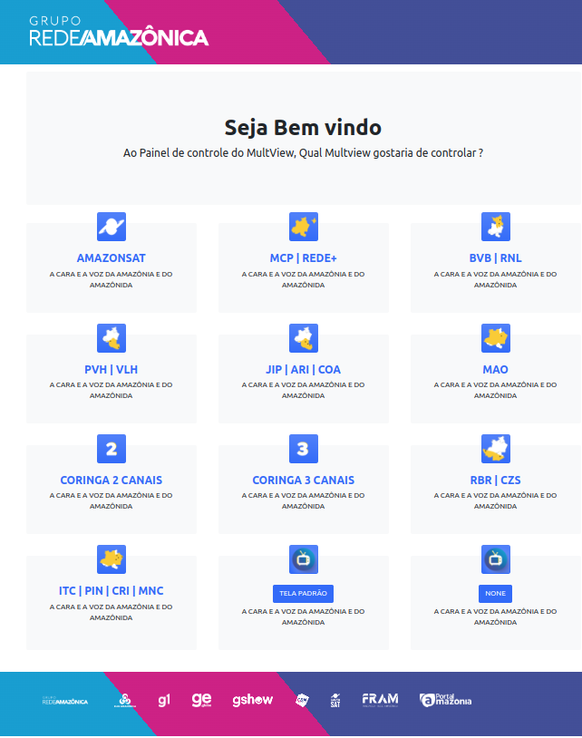

Portfólio Completo
PÓS-GRADUAÇÃO
Classificação de Sentimentos com BERT
Pesquisa focada em utilizar Processamento de Linguagem Natural (NLP) para análise de textos psicoterapêuticos utilizando modelos Transformers.
Pesquisa Acadêmica Em Breve
Dashboard Multiview
Agregador de APIs para monitoramento em tempo real de centrais de transmissão e gestão de propagandas.
Em Breve
Portaria Inteligente
Aplicação Full Stack para controle de portaria empresarial com registro de fotos e gestão de horários.
GitHub
Gestão de Equipamentos (Kits)
Controle de inventário, saída e entrada de equipamentos técnicos para equipes de reportagem.
GitHub
DATA SCIENCE
Análise Exploratória (EDA)
Scripts avançados para limpeza, tratamento e visualização de dados utilizando bibliotecas estatísticas.
Projeto de Dados